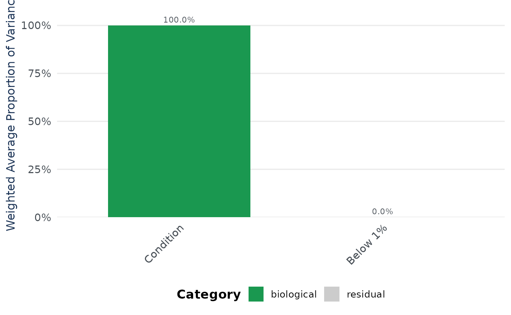

Creates a bar plot showing the weighted average proportion of variance attributed to each factor, colored by category (technical, biological, interaction, residual).
Usage
pvca_plot(
pvca_res,
technical_factors = NULL,
biological_factors = NULL,
variance_threshold = 0.01,
colors = NULL,
title = NULL,
base_size = 15
)Arguments
- pvca_res
data.frame. Output from pvca_compute() with columns 'label' and 'weights'. Optionally pre-categorized with 'category'.
- technical_factors
Character vector. Factor names classified as technical. Required if pvca_res lacks a 'category' column.
- biological_factors
Character vector. Factor names classified as biological. Required if pvca_res lacks a 'category' column.
- variance_threshold
Numeric. Used for categorization if pvca_res lacks 'category' (default 0.01).
- colors
Named character vector of 4 colors for categories: "residual", "biological", "biol:techn", "technical". If NULL, defaults are used.
- title
Character. Plot title (default NULL).
- base_size
Numeric. Base font size for theme_classic (default 15).
Examples
data(nadia_dia)
# nadia_dia has no batch information, so the example builds a plausible one:
# two digestion batches crossed with the three conditions.
cov <- data.frame(Column = nadia_dia$metadata$Coding,
Batch = rep(c("b1", "b2"),
length.out = nrow(nadia_dia$metadata)),
stringsAsFactors = FALSE)
res <- process_proteomics(nadia_dia, covariate_df = cov, verbose = FALSE)
vc <- pvca_compute(res$se_proc, assay_name = "Impseqrob_min",
factors = c("Condition", "Batch"), verbose = FALSE)
#> boundary (singular) fit: see help('isSingular')
pvca_plot(vc, technical_factors = "Batch",
biological_factors = "Condition")
